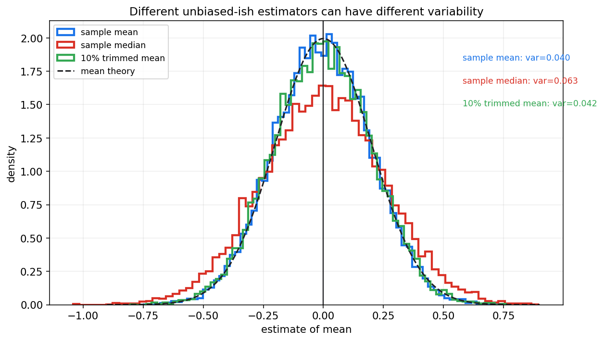
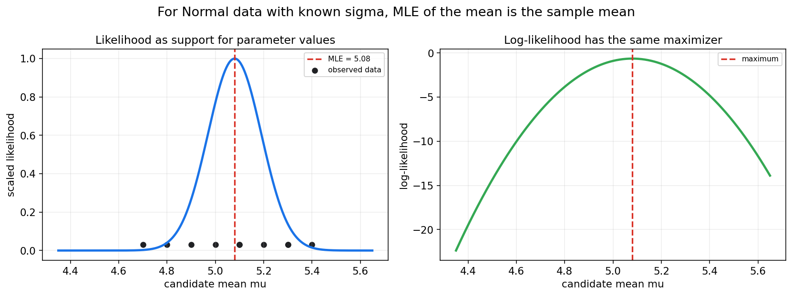
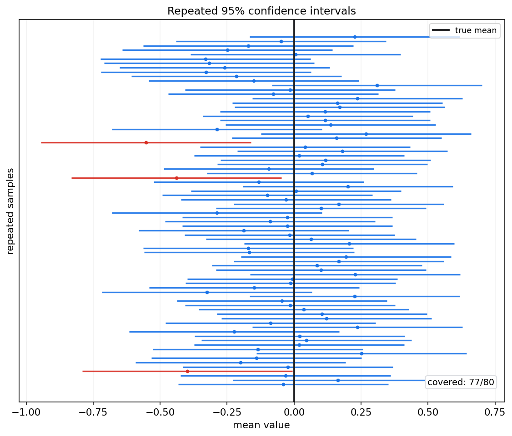
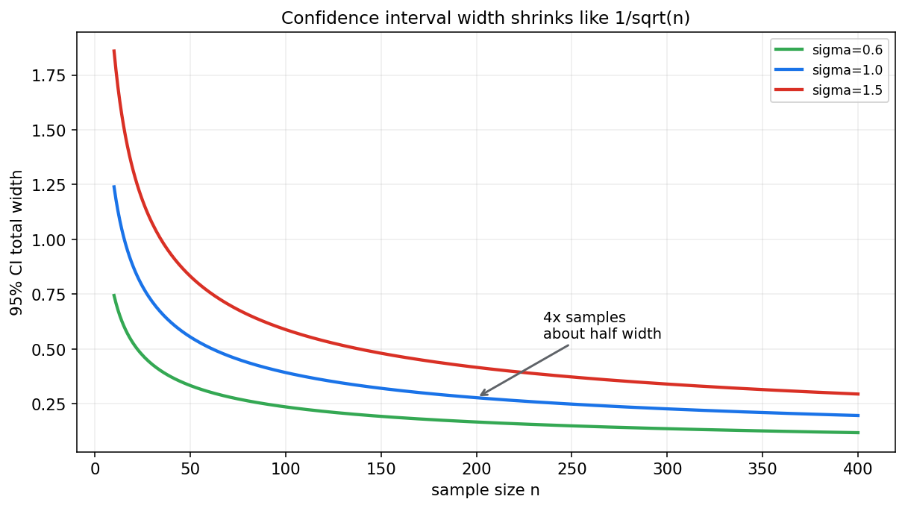

数理统计第八章教程: 点估计, 区间估计与似然方法
第七章已经建立了一条核心线索:
总体 -> 样本 -> 统计量 -> 抽样分布.
这一章开始真正做统计推断:
1. 总体参数未知时, 怎样用样本给出一个估计值?
2. 一个估计量好不好, 不能只看这一次算出来的数, 要看它在重复抽样中怎样表现.
3. 除了报一个点, 怎样给出不确定性范围?
4. 似然函数为什么是统计和机器学习共同的核心语言?这一章是后面假设检验, 回归, 贝叶斯, 统计学习的共同入口.
0. 先看全章主线
第八章的主线可以压成下面这张图:
flowchart LR
A["样本<br/>X1,...,Xn"] --> B["点估计<br/>报一个参数估计值"]
B --> C["估计量性质<br/>无偏性, 一致性, 有效性"]
B --> D["矩估计<br/>用样本矩匹配总体矩"]
B --> E["极大似然估计<br/>找最支持数据的参数"]
E --> F["对数似然<br/>把乘积变成求和"]
F --> G["Fisher 信息<br/>估计精度的局部尺度"]
A --> H["区间估计<br/>报一个不确定性范围"]
H --> I["置信区间<br/>重复抽样覆盖率"]
I --> J["样本量与区间宽度<br/>1/sqrt(n) 规律"]
E --> K["MAP 估计<br/>引向贝叶斯"]一句话概括这一章:
估计不是随口报一个数,
而是在样本随机性的背景下,
设计一个在重复抽样中尽量可靠, 稳定, 高效的规则.
1. 估计问题到底在问什么
1.1 从总体参数开始
设总体分布属于某个参数族:
其中 $\theta$ 是未知参数.
例如:
- Bernoulli 分布里的成功概率 $p$
- Normal 分布里的均值 $\mu$ 和方差 $\sigma^2$
- Exponential 分布里的速率参数 $\lambda$
- 线性回归里的系数向量 $\beta$
我们观察到一组样本:
估计问题就是:
根据这份样本, 构造一个规则去推断未知参数 $\theta$.
1.2 估计量和估计值
估计量是样本的函数:
它还没有代入具体数据, 所以是随机变量.
估计值是把实际样本代入以后得到的数字:
这一区分非常重要:
- 估计量: 研究理论性质, 例如期望, 方差, 极限分布
- 估计值: 针对眼前数据给出的具体答案
1.3 为什么不能只看估计值
假设两种估计方法这一次都算出了接近真实值的结果, 这并不能说明它们一样好.
真正要比较的是:
如果重复抽样很多次, 这个估计规则通常会离真实参数多远?
这就是第七章抽样分布思想在估计问题里的应用.
2. 点估计: 先报一个最有代表性的数
2.1 基本形式
点估计给出一个数字来代表未知参数:
例如:
2.2 点估计的优点和限制
点估计的优点是清晰, 易报告, 易参与后续计算.
但它有一个天然缺陷:
一个点看不出不确定性.
例如两个实验都得到转化率提升 $1%$, 但:
- 一个实验有 100 个用户
- 一个实验有 100000 个用户
这两个 $1%$ 的可信程度显然不同.
2.3 点估计需要配合抽样波动
所以好的统计报告通常至少包括:
- 点估计
- 标准误差
- 置信区间
- 使用了哪些模型假设
只报一个点, 很容易让随机波动看起来像确定事实.
3. 估计量的好坏: 无偏性, 方差, MSE, 一致性
3.1 无偏性
如果
则称 $\hat\theta$ 是 $\theta$ 的无偏估计量.
直觉是:
重复抽样很多次后, 估计量的平均值正好等于真实参数.
例如在独立同分布且期望存在时:
所以样本均值是总体均值的无偏估计.
3.2 有偏不一定没用
无偏性很重要, 但不能把它误解成唯一标准.
一个估计量即使有一点偏差, 只要方差明显更小, 总体误差也可能更低.
这就引出均方误差.
3.3 均方误差 MSE
估计量的均方误差定义为:
它可以分解成:
其中:
这条公式非常实用:
总误差 = 波动误差 + 系统偏差.
机器学习里的正则化, 收缩估计, 模型简化, 都可以从偏差-方差权衡的角度理解.
3.4 一致性
如果样本量越来越大时,
则称 $\hat\theta_n$ 是一致估计量.
直觉是:
样本量足够大时, 估计量会以高概率靠近真实参数.
无偏性看的是有限样本平均是否对准.
一致性看的是大样本极限是否收敛到真实值.
3.5 有效性
在无偏估计量之间, 如果一个估计量方差更小, 它通常更有效.
设 $\hat\theta_1,\hat\theta_2$ 都无偏, 若
则 $\hat\theta_1$ 在重复抽样中更稳定.
但现实中常常不是简单比较无偏估计量, 而要结合 MSE, 鲁棒性, 计算成本和模型假设.
3.6 不同估计量的波动对比

这张图模拟了同一个正态总体下多种位置估计量的重复抽样分布.
样本均值在正态总体下非常有效, 中位数和截尾均值也能估计中心, 但波动规模不同.
这说明:
估计量不是只要"看起来合理"就够, 还要研究它的抽样分布.
4. 矩估计法: 用样本矩匹配总体矩
4.1 什么是矩
总体的一阶矩是:
二阶矩是:
更一般地, $k$ 阶矩是:
样本矩对应为:
4.2 矩估计的核心想法
如果总体矩可以写成参数的函数:
那就用样本矩去近似总体矩:
然后解出 $\theta$.
一句话:
用样本中的平均特征, 去匹配模型里的理论平均特征.
4.3 Bernoulli 分布例子
若
则
样本一阶矩是:
矩估计得到:
这和直觉一致: 成功概率用样本成功比例估计.
4.4 Exponential 分布例子
若采用速率参数形式:
则
令样本均值匹配总体均值:
得到矩估计:
4.5 矩估计的特点
优点:
- 思路直观
- 计算通常简单
- 不一定需要完整写出似然函数
限制:
- 不一定最有效
- 多参数模型中矩的选择会影响结果
- 有时样本矩不稳定, 尤其对重尾分布
5. 似然函数: 哪组参数更支持当前数据
5.1 从概率到似然
如果参数 $\theta$ 已知, 概率模型告诉我们:
也就是在这个参数下看到当前数据的可能性.
现在数据已经观察到了, 参数未知.
我们把同一个表达式看成 $\theta$ 的函数:
这就是似然函数.
5.2 似然不是参数的概率
在频率学派框架里, 参数 $\theta$ 是固定但未知的常数.
所以 $L(\theta)$ 不是:
它表达的是:
如果参数取这个值, 当前数据有多被支持.
5.3 独立样本下的似然
若样本独立同分布, 密度或质量函数为 $f(x;\theta)$, 则似然函数是:
对数似然是:
对数似然常用得更多, 因为:
- 乘积变求和, 计算更稳定
- 求导更方便
- 最大化 $L$ 和最大化 $\ell$ 得到同一个参数
5.4 似然曲线图

图中每一个候选均值 $\mu$ 都对应一个似然值.
似然最高的位置就是极大似然估计.
这张图要留下一个直觉:
MLE 不是神秘公式, 而是在问哪组参数让当前数据最不意外.
6. 极大似然估计 MLE
6.1 定义
极大似然估计定义为:
等价地:
实际计算通常按下面几步:
- 写出样本的联合概率或联合密度
- 把它看成参数的函数, 得到似然
- 取对数得到对数似然
- 对参数求导或使用数值优化
- 检查参数约束和边界
6.2 Bernoulli 分布的 MLE
设
观测值 $x_i\in\{0,1\}$.
似然函数为:
合并指数:
对数似然为:
求导并令其为 0:
得到:
所以 Bernoulli 参数的 MLE 是样本成功比例.
6.3 正态均值的 MLE
设方差 $\sigma^2$ 已知:
对数似然去掉与 $\mu$ 无关的常数后为:
最大化 $\ell(\mu)$ 等价于最小化:
求导得到:
这也是最小二乘和极大似然第一次连起来:
正态噪声假设下, 最小平方误差等价于极大似然.
6.4 正态方差的 MLE
若 $\mu,\sigma^2$ 都未知, 正态模型下 MLE 为:
注意这里分母是 $n$, 不是 $n-1$.
这说明一个重要事实:
MLE 不一定无偏.
用 $n-1$ 的样本方差是无偏估计, 用 $n$ 的方差估计是正态模型下的 MLE.
6.5 Exponential 分布的 MLE
设
密度为:
对数似然为:
求导:
得到:
这个例子中 MLE 和矩估计相同.
6.6 MLE 的大样本性质
在常规条件下, MLE 通常具有几条重要性质:
- 一致性: 样本量大时趋向真实参数
- 渐近正态性: 标准化后近似正态
- 渐近有效性: 大样本下达到信息下界
更具体地, 一维参数下常见结论是:
其中 $I(\theta)$ 是单个样本提供的 Fisher 信息.
7. Fisher 信息: 估计精度的局部尺度
7.1 score 函数
单个样本的对数密度为:
对参数求导得到 score:
score 描述的是:
参数轻微变化时, 对数似然怎样变化.
7.2 Fisher 信息定义
Fisher 信息可写为:
在常规条件下也可写为:
它衡量的是模型对参数变化的敏感程度.
7.3 信息越大, 估计越准
如果 $n$ 个样本独立同分布, 总信息量通常为:
MLE 的渐近方差约为:
所以信息量越大, 参数估计越精确.
7.4 Cramer-Rao 下界的直觉
在常规条件下, 对无偏估计量有:
这叫 Cramer-Rao 下界.
它不是说任何估计量都一定达到这个下界, 而是说:
在给定模型下, 无偏估计量的方差不能随便小.
8. 区间估计: 不只报一个点
8.1 为什么需要区间
点估计回答:
参数大概是多少?
区间估计回答:
在抽样误差影响下, 哪个范围是合理的?
一个典型区间写作:
其中端点本身由样本计算出来, 所以也是随机的.
8.2 置信区间的频率学含义
一个 $95%$ 置信区间的正确解释是:
如果用同一个抽样规则和构造规则重复很多次, 约 $95%$ 的区间会覆盖真实参数.
注意, 在频率学派解释下, 参数不是随机变量.
随机的是区间, 不是参数.
所以不能把一次算出的 $95%$ 置信区间解释成:
真实参数有 $95%$ 概率落在这个具体区间里.
这是本章最重要的易错点之一.
8.3 重复抽样下的覆盖图

图中每条横线是一份样本得到的置信区间.
蓝色区间覆盖了真实均值, 红色区间没有覆盖.
关键直觉是:
置信水平描述的是构造方法的长期覆盖率, 不是某个固定区间内部的后验概率.
9. 单总体均值的置信区间
9.1 方差已知, 正态总体
若
且 $\sigma$ 已知, 则:
所以 $1-\alpha$ 置信区间为:
其中 $z_{\alpha/2}$ 表示标准正态右尾概率为 $\alpha/2$ 的分位点.
常用 $95%$ 区间时:
9.2 方差未知, 正态总体
若 $\sigma$ 未知, 用样本标准差 $S$ 替代.
第七章已经给出:
于是 $1-\alpha$ 置信区间为:
这里 $t_{\alpha/2,n-1}$ 是自由度 $n-1$ 的 t 分布分位点.
9.3 大样本近似
如果样本量足够大, 即使总体不完全正态, 也常用中心极限定理近似:
这时可以用:
作为近似 $95%$ 区间.
但要注意:
- 重尾分布需要更大样本
- 强偏态数据要谨慎
- 非独立样本不能直接套普通标准误
10. 总体比例的置信区间
10.1 样本比例
若 $X_i\in\{0,1\}$, 则总体比例 $p$ 的自然估计是:
大样本下:
用 $\hat p$ 替代未知的 $p$, 得到近似标准误:
近似 $95%$ 区间为:
10.2 边界问题
当样本量小, 或 $\hat p$ 靠近 0 或 1 时, 上面的 Wald 区间可能表现很差.
实际工作中常考虑 Wilson 区间, Clopper-Pearson 区间或贝叶斯 Beta 区间.
本章先记住一个原则:
正态近似不是无条件可靠, 尤其在小样本和边界参数附近要谨慎.
11. 总体方差的置信区间
11.1 正态总体下的方差统计量
若
则:
利用 Chi-square 分位点可以构造 $\sigma^2$ 的区间.
11.2 区间形式
设 $\chi^2_{\alpha/2,n-1}$ 和 $\chi^2_{1-\alpha/2,n-1}$ 是对应分位点, 则:
整理得到:
这是 $\sigma^2$ 的置信区间.
11.3 条件很关键
这个精确区间依赖正态总体假设.
如果总体明显不正态, 样本方差的 Chi-square 结论不再精确.
12. 两总体参数比较初步
12.1 两个均值之差
很多问题关心的不是单个参数, 而是差异:
例如:
- 新旧推荐算法的平均点击率差异
- 两种材料的平均寿命差异
- 两个模型的平均损失差异
若两个独立样本足够大, 可用近似:
用样本方差替代未知方差, 标准误为:
于是可以构造均值差的近似区间.
12.2 两个比例之差
对于 A/B 测试, 常见目标是:
样本估计为:
近似标准误为:
这个形式在第九章假设检验和实验设计中会继续出现.
12.3 配对数据不能当独立样本
如果同一个对象在两个条件下都被测量, 数据是配对的.
例如同一批用户在改版前后的行为, 同一批病人在治疗前后的指标.
这时应先构造差值:
再对差值的均值做推断.
不要把配对样本误当成两个独立样本, 否则标准误会错.
13. 样本量与区间宽度
13.1 宽度的基本规律
均值置信区间的典型半宽是:
所以总宽度大约是:
这说明:
区间宽度按 $1/\sqrt n$ 缩小.
13.2 四倍样本量, 区间宽度约减半
如果希望区间宽度减半, 单纯增加样本量时通常需要:
这就是统计实验里样本量成本很高的原因.

图中可以看到, 前期增加样本量会明显缩窄区间, 后期边际收益逐渐变小.
13.3 区间宽度由三件事控制
一个置信区间的宽度通常由三件事控制:
- 置信水平
置信水平越高, 分位点越大, 区间越宽.
- 数据波动
方差越大, 标准误越大, 区间越宽.
- 样本量
样本量越大, 标准误越小, 区间越窄.
所以想获得更精确估计, 不只有"多收集数据"这一种方式.
降低测量噪声, 改进实验设计, 使用配对设计, 分层抽样, 也可能降低不确定性.
14. Delta 方法初步: 函数形式估计量的不确定性
14.1 问题来源
有时我们估计的不是参数本身 $\theta$, 而是它的函数:
例如:
- odds: $p/(1-p)$
- log odds: $\log(p/(1-p))$
- 标准差: $\sigma=\sqrt{\sigma^2}$
- 相对提升: $(p_B-p_A)/p_A$
如果已经有 $\hat\theta$ 的近似分布, 怎样得到 $g(\hat\theta)$ 的近似分布?
14.2 一维 Delta 方法
若
且 $g$ 在 $\theta$ 附近可导, 则:
实际使用时把未知的 $\theta$ 替换成 $\hat\theta$.
14.3 直觉
Delta 方法本质上是泰勒展开:
所以:
参数估计的波动, 会被函数斜率放大或缩小.
这个思想在机器学习指标区间, A/B 测试比例变换, 广义线性模型中都很常见.
15. MAP 估计: 通向贝叶斯的过渡
15.1 从 MLE 到 MAP
MLE 只看似然:
MAP 估计加入先验:
由贝叶斯公式:
所以:
15.2 MAP 和正则化
如果先验偏好较小的参数, $\log p(\theta)$ 会像惩罚项一样出现.
例如在线性模型里, 高斯先验常对应 L2 正则化.
Laplace 先验常对应 L1 正则化.
所以 MAP 是连接贝叶斯统计和机器学习正则化的一座桥.
15.3 MAP 不是完整贝叶斯推断
MAP 仍然只给一个点估计.
完整贝叶斯推断更关心整个后验分布:
第十二章和第十三章会继续展开先验, 后验, MCMC 和变分推断.
16. 估计方法如何和机器学习连接
16.1 损失函数常常来自负对数似然
最大化对数似然:
等价于最小化负对数似然:
这就是很多机器学习损失函数的来源.
例如:
- 正态回归噪声 -> MSE
- Bernoulli 分类模型 -> binary cross entropy
- Categorical 分类模型 -> cross entropy
16.2 参数估计和泛化误差
训练集上得到的模型参数本质上也是估计量.
它们依赖随机样本, 所以会随训练数据变化.
机器学习里关心的泛化, 可以理解为:
这个由样本估出来的规则, 在未来总体上还能不能稳定工作?
16.3 标准误不只属于传统统计
在模型评估中, accuracy, AUC, 平均损失, 转化率差异, 都是样本统计量.
它们也有标准误和置信区间.
所以工程报告里只写:
模型 A 比模型 B 高 0.3%
是不够的.
还要问:
这个 0.3% 相对抽样波动来说是否足够大?
这会自然通向第九章假设检验.
17. 本章主线总结
第八章可以压成下面几句话:
- 点估计用样本函数给未知参数一个估计值
- 估计量好不好, 要看无偏性, 方差, MSE, 一致性和有效性
- 矩估计用样本矩匹配总体矩
- 极大似然估计选择最支持当前数据的参数
- Fisher 信息描述参数估计的局部精度
- 置信区间描述构造方法的长期覆盖率
- 样本量增加会按 $1/\sqrt n$ 缩小标准误
- MAP 把似然和先验结合起来, 为贝叶斯统计做准备
这章最核心的态度是:
不要只问估计值是多少,
还要问这个估计规则在重复抽样中有多可靠.
18. 典型题型与实战清单
18.1 典型题型
- 判断估计量是否无偏
- 计算 $E[\hat\theta]$
- 和 $\theta$ 比较
- 计算 MSE
- 用 $E[(\hat\theta-\theta)^2]$
- 或用方差加偏差平方
- 用矩估计求参数
- 写总体矩
- 写样本矩
- 解方程
- 写似然和对数似然
- 先写单个样本密度或概率
- 再写独立样本乘积
- 最后取对数
- 求 MLE
- 对对数似然求导
- 注意参数取值范围和边界
- 构造均值置信区间
- 方差已知用 z
- 方差未知且正态总体用 t
- 大样本可用近似
- 解释置信区间
- 说长期覆盖率
- 不说参数有某个概率落入已算出的固定区间
18.2 实战清单
做一个估计问题时, 可以按下面顺序检查:
- 目标参数是什么?
- 样本是否可以近似看作独立同分布?
- 估计量是什么?
- 这个估计量有没有明显偏差?
- 标准误怎么估计?
- 区间估计依赖哪些分布假设?
- 样本量是否足够支撑正态近似?
- 是否存在边界参数, 重尾, 离群点或相关样本?
- 结果应报告为点估计还是区间?
- 如果用于决策, 误差范围是否足够小?
19. 典型误区
误区 1: 把无偏性当成唯一标准
无偏不一定 MSE 最小.
有些有偏估计量通过显著降低方差, 反而有更小的总体误差.
误区 2: 把 MLE 当成一定无偏
正态方差的 MLE 分母是 $n$, 它通常是有偏的.
MLE 的优势更多体现在大样本性质和建模统一性.
误区 3: 把似然当成参数概率
频率学派里, 似然是参数对数据的支持程度, 不是参数的概率分布.
参数概率要进入贝叶斯框架才有对应解释.
误区 4: 误解置信区间
$95%$ 置信区间说的是构造方法长期有 $95%$ 覆盖率.
不是说真实参数以 $95%$ 概率落在这一次算出的区间里.
误区 5: 忘记区间公式的条件
t 区间, Chi-square 方差区间, F 区间都有模型条件.
特别是正态总体假设和独立性假设, 不能省略.
误区 6: 只会套公式, 不看边界
Bernoulli 参数必须在 $[0,1]$.
方差和速率参数必须为正.
求导得到的驻点若不在参数空间里, 就不是合法估计.
误区 7: 忽略样本量和区间宽度的关系
样本量翻倍不会让标准误减半.
标准误按 $1/\sqrt n$ 缩小, 所以精度提升越来越昂贵.
20. 和前后章节的连接点
20.1 和第七章的连接
第七章讲统计量和抽样分布.
本章所有估计量, 标准误, 置信区间都建立在抽样分布上.
20.2 和第九章的连接
置信区间和假设检验是同一套抽样分布思想的两种表达.
第九章会进一步研究:
- p 值
- 显著性水平
- 第一类错误和第二类错误
- 功效和样本量设计
20.3 和第十章的连接
回归模型中的系数估计, 标准误, t 统计量, F 统计量, 都是本章和第七章的直接应用.
20.4 和贝叶斯章节的连接
MLE 只看似然.
MAP 把似然和先验相乘.
完整贝叶斯推断则保留整个后验分布.
所以本章的似然语言, 会在第十二章之后再次成为主线.
21. 本章收尾
估计是从样本走向总体的第一步.
但统计推断从来不是只给一个答案, 而是要同时说明这个答案的不确定性.
第七章告诉我们统计量会随机波动.
第八章告诉我们:
好的估计方法, 必须把这种随机波动纳入设计和解释.
下一章会继续向前走:
当我们不只是想估一个参数, 而是想判断一个说法是否被数据反驳时, 就进入假设检验.